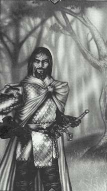

Джулиан (Защитник Арденского леса)Длинные темные волосы, синие глаза .Носит доспехи ,покрашенные в белый цвет. Цвета одежды: белый и черный. Символ - нападающий охотничий ястреб. В "Войне" его символом указано дерево. Его способность к злобе и ненависти велика, но, как и у большинства принцев, любовь к Амберу вершит его путь. Излюбленное убежище - это Арденский Лес, по которому он мчится на удивительном коне Моргенштейне. Больше всего он не любит быть переигранным в собственной игре. В этом он, вероятно, самый незрелый из всех принцев. И все же он великолепный боец на мечах и кавалерист, и защита самого Амбера часто падает на его плечи. |
 |